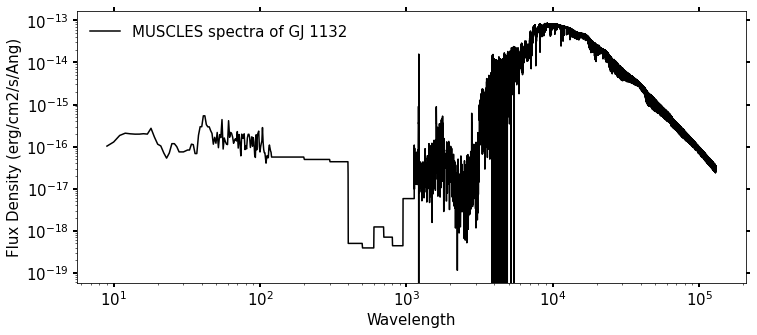

Stellar Spectra Conversion
Contents
Stellar Spectra Conversion#
Created on June 6th 2022 @ 3rd Eddy Cross Disciplinary Symposium, Vail, CO, USA Code based on original idea by Dan Marsh (NCAR, University of Leeds).
Authors:
Gregory Cooke (University of Leeds, pygjc@leeds.ac.uk)
Allison Youngblood (NASA Goddard)
User Guide#
Code to read in files from the MUSCLES database and scale them to be used in various atmospheric models for different planets in those stellar systems
Run each cell until drop down menus appear Select your desired options from dropdown menus
To do list#
rebin spectra
save out spectra file
add different climate model wavelength grids (only WACCM, ROCKE-3D so far)
comment code better
#imports
import matplotlib.pyplot as plt
import numpy as np
import xarray as xr
from ipywidgets import interactive
import matplotlib.gridspec as gridspec
from astropy.io import fits
# return subscript number or text as a string
def sub(Input):
return r'$_{'+str(Input)+'}$'
# return superscript number or text as a string
def sup(Input):
return r'$^{'+str(Input)+'}$'
List of MUSCLES database below#
Program options begin here.
Stellar_names = {'GJ 1132':'https://archive.stsci.edu/missions/hlsp/muscles/gj1132/hlsp_muscles_multi_multi_gj1132_broadband_v23_adapt-const-res-sed.fits',
'GJ 15A':'https://archive.stsci.edu/missions/hlsp/muscles/gj15a/hlsp_muscles_multi_multi_gj15a_broadband_v23_adapt-const-res-sed.fits',
'GJ 1214':'https://archive.stsci.edu/missions/hlsp/muscles/gj1214/hlsp_muscles_multi_multi_gj1214_broadband_v22_adapt-const-res-sed.fits',
'GJ 163':'https://archive.stsci.edu/missions/hlsp/muscles/gj163/hlsp_muscles_multi_multi_gj163_broadband_v23_adapt-const-res-sed.fits',
'GJ 176':'https://archive.stsci.edu/missions/hlsp/muscles/gj176/hlsp_muscles_multi_multi_gj176_broadband_v22_adapt-const-res-sed.fits',
'GJ 436':'https://archive.stsci.edu/missions/hlsp/muscles/gj436/hlsp_muscles_multi_multi_gj436_broadband_v22_adapt-const-res-sed.fits',
'GJ 581':'https://archive.stsci.edu/missions/hlsp/muscles/gj581/hlsp_muscles_multi_multi_gj581_broadband_v22_adapt-const-res-sed.fits',
'GJ 649':'https://archive.stsci.edu/missions/hlsp/muscles/gj649/hlsp_muscles_multi_multi_gj649_broadband_v23_adapt-const-res-sed.fits',
'GJ 667 C':'https://archive.stsci.edu/missions/hlsp/muscles/gj667c/hlsp_muscles_multi_multi_gj667c_broadband_v22_adapt-const-res-sed.fits',
'GJ 674':'https://archive.stsci.edu/missions/hlsp/muscles/gj674/hlsp_muscles_multi_multi_gj674_broadband_v23_adapt-const-res-sed.fits',
'GJ 676 A':'https://archive.stsci.edu/missions/hlsp/muscles/gj676a/hlsp_muscles_multi_multi_gj676a_broadband_v23_adapt-const-res-sed.fits',
'GJ 699':'https://archive.stsci.edu/missions/hlsp/muscles/gj699/hlsp_muscles_multi_multi_gj699_broadband_v23_adapt-const-res-sed.fits',
'GJ 729':'https://archive.stsci.edu/missions/hlsp/muscles/gj729/hlsp_muscles_multi_multi_gj729_broadband_v23_adapt-const-res-sed.fits',
'GJ 832':'https://archive.stsci.edu/missions/hlsp/muscles/gj832/hlsp_muscles_multi_multi_gj832_broadband_v22_adapt-const-res-sed.fits',
'GJ 849':'https://archive.stsci.edu/missions/hlsp/muscles/gj849/hlsp_muscles_multi_multi_gj849_broadband_v23_adapt-const-res-sed.fits',
'GJ 876':'https://archive.stsci.edu/missions/hlsp/muscles/gj876/hlsp_muscles_multi_multi_gj876_broadband_v22_adapt-const-res-sed.fits',
'HD40307':'https://archive.stsci.edu/missions/hlsp/muscles/hd40307/hlsp_muscles_multi_multi_hd40307_broadband_v22_adapt-const-res-sed.fits',
'HD85512':'https://archive.stsci.edu/missions/hlsp/muscles/hd85512/hlsp_muscles_multi_multi_hd85512_broadband_v22_adapt-const-res-sed.fits',
'HD97658':'https://archive.stsci.edu/missions/hlsp/muscles/hd97658/hlsp_muscles_multi_multi_hd97658_broadband_v22_adapt-const-res-sed.fits',
'L-980-5':'https://archive.stsci.edu/missions/hlsp/muscles/l-980-5/hlsp_muscles_multi_multi_l-980-5_broadband_v23_adapt-const-res-sed.fits',
'LHS-2686':'https://archive.stsci.edu/missions/hlsp/muscles/lhs-2686/hlsp_muscles_multi_multi_lhs-2686_broadband_v23_adapt-const-res-sed.fits',
'TRAPPIST-1':'https://archive.stsci.edu/missions/hlsp/muscles/trappist-1/hlsp_muscles_multi_multi_trappist-1_broadband_v23_adapt-const-res-sed.fits',
'V-EPS-ERI':'https://archive.stsci.edu/missions/hlsp/muscles/v-eps-eri/hlsp_muscles_multi_multi_v-eps-eri_broadband_v22_adapt-const-res-sed.fits',
'GJ551':'https://archive.stsci.edu/missions/hlsp/muscles/gj551/hlsp_muscles_multi_multi_gj551_broadband_v22_adapt-const-res-sed.fits'}
#get a drop down menu
import ipywidgets as widgets
#select directories for MUSCLES files
MUSCLES_files = widgets.Dropdown(options=(Stellar_names),description='MUSCLES Files:',disabled=False)
display(MUSCLES_files)
'''
set Spectra_name_same_as_host_name = False if looking at exoplanets around
a different star to the ones in the MUSCLES database
i.e you want spectra for an M8 star but the closest spectra availiable is TRAPPIST-1
otherwise in this example you will only be able to select TRAPPIST-1 planets
if Spectra_name_same_as_host_name = True
'''
Spectra_name_same_as_host_name = True
#get star name
star_name = [k for k, v in Stellar_names.items() if v == MUSCLES_files.value][0]
Import MUSCLES spectra#
import os
if(os.path.isfile(MUSCLES_files.value)): print('File already downloaded')
else:os.system('wget '+ MUSCLES_files.value)
--2022-06-09 16:25:26-- https://archive.stsci.edu/missions/hlsp/muscles/gj1132/hlsp_muscles_multi_multi_gj1132_broadband_v23_adapt-const-res-sed.fits
Resolving archive.stsci.edu (archive.stsci.edu)... 130.167.201.60
Connecting to archive.stsci.edu (archive.stsci.edu)|130.167.201.60|:443... connected.
HTTP request sent, awaiting response... 200 OK
Length: 13538880 (13M) [allicashion/octet-stream]
Saving to: ‘hlsp_muscles_multi_multi_gj1132_broadband_v23_adapt-const-res-sed.fits’
0K .......... .......... .......... .......... .......... 0% 613K 22s
50K .......... .......... .......... .......... .......... 0% 599K 22s
100K .......... .......... .......... .......... .......... 1% 147M 14s
150K .......... .......... .......... .......... .......... 1% 1.18M 13s
200K .......... .......... .......... .......... .......... 1% 65.8M 11s
250K .......... .......... .......... .......... .......... 2% 242M 9s
300K .......... .......... .......... .......... .......... 2% 1.21M 9s
350K .......... .......... .......... .......... .......... 3% 132M 8s
400K .......... .......... .......... .......... .......... 3% 36.6M 7s
450K .......... .......... .......... .......... .......... 3% 246M 6s
500K .......... .......... .......... .......... .......... 4% 91.7M 6s
550K .......... .......... .......... .......... .......... 4% 202M 5s
600K .......... .......... .......... .......... .......... 4% 118M 5s
650K .......... .......... .......... .......... .......... 5% 1.24M 5s
700K .......... .......... .......... .......... .......... 5% 249M 5s
750K .......... .......... .......... .......... .......... 6% 139M 5s
800K .......... .......... .......... .......... .......... 6% 119M 4s
850K .......... .......... .......... .......... .......... 6% 133M 4s
900K .......... .......... .......... .......... .......... 7% 149M 4s
950K .......... .......... .......... .......... .......... 7% 145M 4s
1000K .......... .......... .......... .......... .......... 7% 139M 3s
1050K .......... .......... .......... .......... .......... 8% 99.8M 3s
1100K .......... .......... .......... .......... .......... 8% 139M 3s
1150K .......... .......... .......... .......... .......... 9% 165M 3s
1200K .......... .......... .......... .......... .......... 9% 138M 3s
1250K .......... .......... .......... .......... .......... 9% 150M 3s
1300K .......... .......... .......... .......... .......... 10% 1.30M 3s
1350K .......... .......... .......... .......... .......... 10% 214M 3s
1400K .......... .......... .......... .......... .......... 10% 179M 3s
1450K .......... .......... .......... .......... .......... 11% 141M 3s
1500K .......... .......... .......... .......... .......... 11% 180M 3s
1550K .......... .......... .......... .......... .......... 12% 149M 2s
1600K .......... .......... .......... .......... .......... 12% 145M 2s
1650K .......... .......... .......... .......... .......... 12% 126M 2s
1700K .......... .......... .......... .......... .......... 13% 249M 2s
1750K .......... .......... .......... .......... .......... 13% 146M 2s
1800K .......... .......... .......... .......... .......... 13% 153M 2s
1850K .......... .......... .......... .......... .......... 14% 153M 2s
1900K .......... .......... .......... .......... .......... 14% 156M 2s
1950K .......... .......... .......... .......... .......... 15% 181M 2s
2000K .......... .......... .......... .......... .......... 15% 144M 2s
2050K .......... .......... .......... .......... .......... 15% 129M 2s
2100K .......... .......... .......... .......... .......... 16% 148M 2s
2150K .......... .......... .......... .......... .......... 16% 143M 2s
2200K .......... .......... .......... .......... .......... 17% 122M 2s
2250K .......... .......... .......... .......... .......... 17% 150M 2s
2300K .......... .......... .......... .......... .......... 17% 145M 2s
2350K .......... .......... .......... .......... .......... 18% 158M 2s
2400K .......... .......... .......... .......... .......... 18% 134M 1s
2450K .......... .......... .......... .......... .......... 18% 146M 1s
2500K .......... .......... .......... .......... .......... 19% 163M 1s
2550K .......... .......... .......... .......... .......... 19% 155M 1s
2600K .......... .......... .......... .......... .......... 20% 1.46M 1s
2650K .......... .......... .......... .......... .......... 20% 42.1M 1s
2700K .......... .......... .......... .......... .......... 20% 175M 1s
2750K .......... .......... .......... .......... .......... 21% 68.8M 1s
2800K .......... .......... .......... .......... .......... 21% 109M 1s
2850K .......... .......... .......... .......... .......... 21% 161M 1s
2900K .......... .......... .......... .......... .......... 22% 134M 1s
2950K .......... .......... .......... .......... .......... 22% 162M 1s
3000K .......... .......... .......... .......... .......... 23% 120M 1s
3050K .......... .......... .......... .......... .......... 23% 159M 1s
3100K .......... .......... .......... .......... .......... 23% 138M 1s
3150K .......... .......... .......... .......... .......... 24% 145M 1s
3200K .......... .......... .......... .......... .......... 24% 147M 1s
3250K .......... .......... .......... .......... .......... 24% 58.7M 1s
3300K .......... .......... .......... .......... .......... 25% 208M 1s
3350K .......... .......... .......... .......... .......... 25% 125M 1s
3400K .......... .......... .......... .......... .......... 26% 68.0M 1s
3450K .......... .......... .......... .......... .......... 26% 131M 1s
3500K .......... .......... .......... .......... .......... 26% 141M 1s
3550K .......... .......... .......... .......... .......... 27% 171M 1s
3600K .......... .......... .......... .......... .......... 27% 71.3M 1s
3650K .......... .......... .......... .......... .......... 27% 95.9M 1s
3700K .......... .......... .......... .......... .......... 28% 115M 1s
3750K .......... .......... .......... .......... .......... 28% 41.1M 1s
3800K .......... .......... .......... .......... .......... 29% 122M 1s
3850K .......... .......... .......... .......... .......... 29% 150M 1s
3900K .......... .......... .......... .......... .......... 29% 135M 1s
3950K .......... .......... .......... .......... .......... 30% 148M 1s
4000K .......... .......... .......... .......... .......... 30% 108M 1s
4050K .......... .......... .......... .......... .......... 31% 157M 1s
4100K .......... .......... .......... .......... .......... 31% 122M 1s
4150K .......... .......... .......... .......... .......... 31% 154M 1s
4200K .......... .......... .......... .......... .......... 32% 121M 1s
4250K .......... .......... .......... .......... .......... 32% 157M 1s
4300K .......... .......... .......... .......... .......... 32% 137M 1s
4350K .......... .......... .......... .......... .......... 33% 128M 1s
4400K .......... .......... .......... .......... .......... 33% 157M 1s
4450K .......... .......... .......... .......... .......... 34% 140M 1s
4500K .......... .......... .......... .......... .......... 34% 182M 1s
4550K .......... .......... .......... .......... .......... 34% 137M 1s
4600K .......... .......... .......... .......... .......... 35% 133M 1s
4650K .......... .......... .......... .......... .......... 35% 138M 1s
4700K .......... .......... .......... .......... .......... 35% 136M 1s
4750K .......... .......... .......... .......... .......... 36% 201M 1s
4800K .......... .......... .......... .......... .......... 36% 127M 1s
4850K .......... .......... .......... .......... .......... 37% 140M 1s
4900K .......... .......... .......... .......... .......... 37% 160M 1s
4950K .......... .......... .......... .......... .......... 37% 144M 1s
5000K .......... .......... .......... .......... .......... 38% 126M 1s
5050K .......... .......... .......... .......... .......... 38% 153M 1s
5100K .......... .......... .......... .......... .......... 38% 158M 1s
5150K .......... .......... .......... .......... .......... 39% 151M 1s
5200K .......... .......... .......... .......... .......... 39% 2.29M 1s
5250K .......... .......... .......... .......... .......... 40% 132M 1s
5300K .......... .......... .......... .......... .......... 40% 26.0M 1s
5350K .......... .......... .......... .......... .......... 40% 179M 1s
5400K .......... .......... .......... .......... .......... 41% 127M 1s
5450K .......... .......... .......... .......... .......... 41% 108M 1s
5500K .......... .......... .......... .......... .......... 41% 172M 1s
5550K .......... .......... .......... .......... .......... 42% 80.6M 1s
5600K .......... .......... .......... .......... .......... 42% 163M 1s
5650K .......... .......... .......... .......... .......... 43% 127M 1s
5700K .......... .......... .......... .......... .......... 43% 125M 1s
5750K .......... .......... .......... .......... .......... 43% 183M 1s
5800K .......... .......... .......... .......... .......... 44% 102M 1s
5850K .......... .......... .......... .......... .......... 44% 139M 1s
5900K .......... .......... .......... .......... .......... 45% 154M 1s
5950K .......... .......... .......... .......... .......... 45% 159M 1s
6000K .......... .......... .......... .......... .......... 45% 137M 1s
6050K .......... .......... .......... .......... .......... 46% 149M 0s
6100K .......... .......... .......... .......... .......... 46% 83.6M 0s
6150K .......... .......... .......... .......... .......... 46% 105M 0s
6200K .......... .......... .......... .......... .......... 47% 101M 0s
6250K .......... .......... .......... .......... .......... 47% 105M 0s
6300K .......... .......... .......... .......... .......... 48% 107M 0s
6350K .......... .......... .......... .......... .......... 48% 106M 0s
6400K .......... .......... .......... .......... .......... 48% 140M 0s
6450K .......... .......... .......... .......... .......... 49% 156M 0s
6500K .......... .......... .......... .......... .......... 49% 123M 0s
6550K .......... .......... .......... .......... .......... 49% 160M 0s
6600K .......... .......... .......... .......... .......... 50% 143M 0s
6650K .......... .......... .......... .......... .......... 50% 127M 0s
6700K .......... .......... .......... .......... .......... 51% 173M 0s
6750K .......... .......... .......... .......... .......... 51% 122M 0s
6800K .......... .......... .......... .......... .......... 51% 156M 0s
6850K .......... .......... .......... .......... .......... 52% 149M 0s
6900K .......... .......... .......... .......... .......... 52% 153M 0s
6950K .......... .......... .......... .......... .......... 52% 130M 0s
7000K .......... .......... .......... .......... .......... 53% 143M 0s
7050K .......... .......... .......... .......... .......... 53% 142M 0s
7100K .......... .......... .......... .......... .......... 54% 129M 0s
7150K .......... .......... .......... .......... .......... 54% 154M 0s
7200K .......... .......... .......... .......... .......... 54% 115M 0s
7250K .......... .......... .......... .......... .......... 55% 133M 0s
7300K .......... .......... .......... .......... .......... 55% 147M 0s
7350K .......... .......... .......... .......... .......... 55% 140M 0s
7400K .......... .......... .......... .......... .......... 56% 130M 0s
7450K .......... .......... .......... .......... .......... 56% 161M 0s
7500K .......... .......... .......... .......... .......... 57% 85.8M 0s
7550K .......... .......... .......... .......... .......... 57% 187M 0s
7600K .......... .......... .......... .......... .......... 57% 127M 0s
7650K .......... .......... .......... .......... .......... 58% 131M 0s
7700K .......... .......... .......... .......... .......... 58% 134M 0s
7750K .......... .......... .......... .......... .......... 58% 176M 0s
7800K .......... .......... .......... .......... .......... 59% 80.7M 0s
7850K .......... .......... .......... .......... .......... 59% 147M 0s
7900K .......... .......... .......... .......... .......... 60% 107M 0s
7950K .......... .......... .......... .......... .......... 60% 160M 0s
8000K .......... .......... .......... .......... .......... 60% 137M 0s
8050K .......... .......... .......... .......... .......... 61% 131M 0s
8100K .......... .......... .......... .......... .......... 61% 2.66M 0s
8150K .......... .......... .......... .......... .......... 62% 177M 0s
8200K .......... .......... .......... .......... .......... 62% 140M 0s
8250K .......... .......... .......... .......... .......... 62% 118M 0s
8300K .......... .......... .......... .......... .......... 63% 33.4M 0s
8350K .......... .......... .......... .......... .......... 63% 219M 0s
8400K .......... .......... .......... .......... .......... 63% 53.4M 0s
8450K .......... .......... .......... .......... .......... 64% 110M 0s
8500K .......... .......... .......... .......... .......... 64% 19.8M 0s
8550K .......... .......... .......... .......... .......... 65% 193M 0s
8600K .......... .......... .......... .......... .......... 65% 63.0M 0s
8650K .......... .......... .......... .......... .......... 65% 79.2M 0s
8700K .......... .......... .......... .......... .......... 66% 172M 0s
8750K .......... .......... .......... .......... .......... 66% 141M 0s
8800K .......... .......... .......... .......... .......... 66% 115M 0s
8850K .......... .......... .......... .......... .......... 67% 162M 0s
8900K .......... .......... .......... .......... .......... 67% 141M 0s
8950K .......... .......... .......... .......... .......... 68% 175M 0s
9000K .......... .......... .......... .......... .......... 68% 96.9M 0s
9050K .......... .......... .......... .......... .......... 68% 163M 0s
9100K .......... .......... .......... .......... .......... 69% 116M 0s
9150K .......... .......... .......... .......... .......... 69% 180M 0s
9200K .......... .......... .......... .......... .......... 69% 115M 0s
9250K .......... .......... .......... .......... .......... 70% 123M 0s
9300K .......... .......... .......... .......... .......... 70% 159M 0s
9350K .......... .......... .......... .......... .......... 71% 143M 0s
9400K .......... .......... .......... .......... .......... 71% 135M 0s
9450K .......... .......... .......... .......... .......... 71% 156M 0s
9500K .......... .......... .......... .......... .......... 72% 136M 0s
9550K .......... .......... .......... .......... .......... 72% 169M 0s
9600K .......... .......... .......... .......... .......... 72% 90.4M 0s
9650K .......... .......... .......... .......... .......... 73% 131M 0s
9700K .......... .......... .......... .......... .......... 73% 145M 0s
9750K .......... .......... .......... .......... .......... 74% 128M 0s
9800K .......... .......... .......... .......... .......... 74% 152M 0s
9850K .......... .......... .......... .......... .......... 74% 161M 0s
9900K .......... .......... .......... .......... .......... 75% 129M 0s
9950K .......... .......... .......... .......... .......... 75% 158M 0s
10000K .......... .......... .......... .......... .......... 76% 36.3M 0s
10050K .......... .......... .......... .......... .......... 76% 123M 0s
10100K .......... .......... .......... .......... .......... 76% 135M 0s
10150K .......... .......... .......... .......... .......... 77% 191M 0s
10200K .......... .......... .......... .......... .......... 77% 103M 0s
10250K .......... .......... .......... .......... .......... 77% 164M 0s
10300K .......... .......... .......... .......... .......... 78% 152M 0s
10350K .......... .......... .......... .......... .......... 78% 148M 0s
10400K .......... .......... .......... .......... .......... 79% 133M 0s
10450K .......... .......... .......... .......... .......... 79% 116M 0s
10500K .......... .......... .......... .......... .......... 79% 172M 0s
10550K .......... .......... .......... .......... .......... 80% 65.7M 0s
10600K .......... .......... .......... .......... .......... 80% 125M 0s
10650K .......... .......... .......... .......... .......... 80% 87.5M 0s
10700K .......... .......... .......... .......... .......... 81% 176M 0s
10750K .......... .......... .......... .......... .......... 81% 128M 0s
10800K .......... .......... .......... .......... .......... 82% 141M 0s
10850K .......... .......... .......... .......... .......... 82% 147M 0s
10900K .......... .......... .......... .......... .......... 82% 164M 0s
10950K .......... .......... .......... .......... .......... 83% 2.77M 0s
11000K .......... .......... .......... .......... .......... 83% 111M 0s
11050K .......... .......... .......... .......... .......... 83% 100M 0s
11100K .......... .......... .......... .......... .......... 84% 141M 0s
11150K .......... .......... .......... .......... .......... 84% 163M 0s
11200K .......... .......... .......... .......... .......... 85% 120M 0s
11250K .......... .......... .......... .......... .......... 85% 148M 0s
11300K .......... .......... .......... .......... .......... 85% 134M 0s
11350K .......... .......... .......... .......... .......... 86% 171M 0s
11400K .......... .......... .......... .......... .......... 86% 122M 0s
11450K .......... .......... .......... .......... .......... 86% 139M 0s
11500K .......... .......... .......... .......... .......... 87% 169M 0s
11550K .......... .......... .......... .......... .......... 87% 47.7M 0s
11600K .......... .......... .......... .......... .......... 88% 49.8M 0s
11650K .......... .......... .......... .......... .......... 88% 85.1M 0s
11700K .......... .......... .......... .......... .......... 88% 128M 0s
11750K .......... .......... .......... .......... .......... 89% 109M 0s
11800K .......... .......... .......... .......... .......... 89% 159M 0s
11850K .......... .......... .......... .......... .......... 90% 36.9M 0s
11900K .......... .......... .......... .......... .......... 90% 176M 0s
11950K .......... .......... .......... .......... .......... 90% 136M 0s
12000K .......... .......... .......... .......... .......... 91% 159M 0s
12050K .......... .......... .......... .......... .......... 91% 61.3M 0s
12100K .......... .......... .......... .......... .......... 91% 210M 0s
12150K .......... .......... .......... .......... .......... 92% 124M 0s
12200K .......... .......... .......... .......... .......... 92% 229M 0s
12250K .......... .......... .......... .......... .......... 93% 39.1M 0s
12300K .......... .......... .......... .......... .......... 93% 150M 0s
12350K .......... .......... .......... .......... .......... 93% 162M 0s
12400K .......... .......... .......... .......... .......... 94% 127M 0s
12450K .......... .......... .......... .......... .......... 94% 134M 0s
12500K .......... .......... .......... .......... .......... 94% 198M 0s
12550K .......... .......... .......... .......... .......... 95% 132M 0s
12600K .......... .......... .......... .......... .......... 95% 49.7M 0s
12650K .......... .......... .......... .......... .......... 96% 244M 0s
12700K .......... .......... .......... .......... .......... 96% 104M 0s
12750K .......... .......... .......... .......... .......... 96% 145M 0s
12800K .......... .......... .......... .......... .......... 97% 125M 0s
12850K .......... .......... .......... .......... .......... 97% 155M 0s
12900K .......... .......... .......... .......... .......... 97% 129M 0s
12950K .......... .......... .......... .......... .......... 98% 141M 0s
13000K .......... .......... .......... .......... .......... 98% 141M 0s
13050K .......... .......... .......... .......... .......... 99% 124M 0s
13100K .......... .......... .......... .......... .......... 99% 160M 0s
13150K .......... .......... .......... .......... .......... 99% 159M 0s
13200K .......... .......... . 100% 143M=0.5s
2022-06-09 16:25:27 (24.8 MB/s) - ‘hlsp_muscles_multi_multi_gj1132_broadband_v23_adapt-const-res-sed.fits’ saved [13538880/13538880]
spec = fits.getdata(MUSCLES_files.value,1)
plt.figure(figsize = (12,5))
plt.plot(spec['WAVELENGTH'],spec['FLUX'], color = 'k', label = 'MUSCLES spectra of '+star_name)
plt.tick_params(labelsize = 15, width = 2, length = 4, right = True, top = True)
plt.xlabel('Wavelength', fontsize = 15); plt.xscale('log')
plt.ylabel('Flux Density (erg/cm2/s/Ang)', fontsize = 15); plt.yscale('log')
plt.legend(loc = 0, frameon = False, fontsize = 15);

#convert to mW/m2/nm
per_cm2_to_per_m2 = 100**2
erg_per_s_to_mW = 1e-4
per_Ang_to_per_nm = 10
New_flux = spec['FLUX'] * erg_per_s_to_mW * per_cm2_to_per_m2 * per_Ang_to_per_nm
Wavelength_nm = spec['WAVELENGTH']/10
# plot in new units
'''
plt.figure(figsize = (12,5))
plt.plot(Wavelength_nm,New_flux, color = 'k', label = 'MUSCLES spectra of '+star_name)
plt.tick_params(labelsize = 15, width = 2, length = 4, right = True, top = True)
plt.xlabel('Wavelength', fontsize = 15); plt.xscale('log')
plt.ylabel('Flux Density mW/m'+sup(2)+'/nm)', fontsize = 15); plt.yscale('log')
plt.legend(loc = 0, frameon = False, fontsize = 15)
''';
#remove MUSCLES files in current directory
os.system('rm *muscles*.fits')
0
#find total stellar irradiance from file
from scipy.integrate import trapz
#get total stellar irradiance at top of atmosphere
TSI_spectra = trapz(New_flux,Wavelength_nm)
print('Total stellar irradiance relative to the Sun: '+ str(TSI_spectra/1360000))
Total stellar irradiance relative to the Sun: 8.605194006526416e-17
# scale TSI
Scaled_flux_to_Earth = New_flux/(TSI_spectra/1360000)
TSI_spectra = trapz(Scaled_flux_to_Earth, Wavelength_nm)
print('Scaled total stellar irradiance relative to the Sun: '+ str(TSI_spectra/1360000))
Scaled total stellar irradiance relative to the Sun: 1.0
#Select climate model
Climate_model_list = ['WACCM','CAM','ExoCam','UM','ROCKE-3D','CCSM3','Atmos','ExoPrime']
Climate_model_selection = widgets.Dropdown(options=Climate_model_list,description='Select climate model',disabled=False)
display(Climate_model_selection)
#Compare to WACCM standard solar file
if (Climate_model_selection.value == 'WACCM' or Climate_model_selection.value == 'CAM'):
#check for file. Download if not in directory
if(os.path.isfile('SolarForcingCMIP6piControl_c160921.nc')): print('File already downloaded')
else: os.system('wget https://svn-ccsm-inputdata.cgd.ucar.edu/trunk/inputdata/atm/cam/solar/SolarForcingCMIP6piControl_c160921.nc --no-check-certificate')
solar_file = 'SolarForcingCMIP6piControl_c160921.nc'#read in file
ds = xr.open_dataset(solar_file)#attach file to dataset
ssi = ds['ssi'].isel(time=0) #define dataset from file
model_flux = ssi.values #flux values
model_wavelength = ssi.wavelength.values #wavelength grid
starlabel = 'Sun' #label for plot
elif(Climate_model_selection.value == 'ExoCAM'):
print('ExoCam spectrum input file unknown')
elif(Climate_model_selection.value == 'UM'):
print('UM spectrum input file unknown')
elif(Climate_model_selection.value == 'ROCKE-3D'):
#check for file. Download if not in directory
if(os.path.isfile('sun')): print('File already downloaded')
else: os.system('wget https://portal.nccs.nasa.gov/GISS_modelE/ROCKE-3D/stellar_spectra/sun')
solar_file = 'SolarForcingCMIP6piControl_c160921.nc'#read in file
ROCKE_3D_solar_input = np.genfromtxt('sun', skip_header = 5, skip_footer = 1)
model_flux = ROCKE_3D_solar_input[:,1]
model_wavelength = ROCKE_3D_solar_input[:,0]*1e9 #wavelength grid
starlabel = 'Sun' #label for plot
elif(Climate_model_selection.value == 'CCSM3'):
print('CCSM3 spectrum input file unknown')
elif(Climate_model_selection.value == 'Atmos'):
if(os.path.isfile('muscles_gj667c.txt')): print('File already downloaded')
else: os.system('wget https://raw.githubusercontent.com/VirtualPlanetaryLaboratory/atmos/master/PHOTOCHEM/DATA/FLUX/muscles_gj667c.txt')
ATMOS_gj667c_input = np.genfromtxt('muscles_gj667c.txt')
model_wavelength = ATMOS_gj667c_input[:,0]/10
model_flux = ATMOS_gj667c_input[:,1]
starlabel = 'GJ 667 C'
else:
print('Spectrum input file unknown')
#compare spectra to Sun
plt.figure(figsize = (12,5))
plt.plot(Wavelength_nm, Scaled_flux_to_Earth, color = 'r', label = 'MUSCLES spectra of '+star_name)
plt.plot(model_wavelength, model_flux, color = 'k', label = starlabel)
plt.tick_params(labelsize = 15, width = 2, length = 4, right = True, top = True)
plt.xlabel('Wavelength [nm]', fontsize = 15); plt.xscale('log')
plt.ylabel('Irradiance [W/m]'+sup(-3), fontsize = 15); plt.yscale('log')
plt.xscale('log')
plt.yscale('log')
plt.legend(loc = 0, frameon = False, fontsize = 15)
File already downloaded
<matplotlib.legend.Legend at 0x7f0deb425700>
import pandas as pd
NASA_Exo_Archive = pd.read_csv('https://exoplanetarchive.ipac.caltech.edu/TAP/sync?query=select+*+from+ps&format=csv')
/tmp/ipykernel_79/512134744.py:2: DtypeWarning: Columns (50,65,148,153,183,187,206,211,237,242) have mixed types. Specify dtype option on import or set low_memory=False.
NASA_Exo_Archive = pd.read_csv('https://exoplanetarchive.ipac.caltech.edu/TAP/sync?query=select+*+from+ps&format=csv')
#Find planets based on host name
if (Spectra_name_same_as_host_name == True):
#choose planet
planets = NASA_Exo_Archive.loc[NASA_Exo_Archive['hostname'] == star_name]['pl_name']
Find_planets = widgets.Dropdown(options=planets.drop_duplicates(),description='Find planets',disabled=False)
display(Find_planets)
else:
Find_host = widgets.Dropdown(options=(NASA_Exo_Archive['hostname'].drop_duplicates()),description='Find host',disabled=False)
display(Find_host)
#choose planet
planets = NASA_Exo_Archive.loc[NASA_Exo_Archive['hostname'] == Find_host.value]['pl_name']
Find_planets = widgets.Dropdown(options=planets,description='Find planets',disabled=False)
display(Find_planets)
#drop nan rows ofr luminosity and orbital period
pl = NASA_Exo_Archive.loc[NASA_Exo_Archive['pl_name'] == Find_planets.value].dropna(subset='st_lum')
pl = pl.dropna(subset='pl_orbsmax')
#find semi-major axis in AU
pl = pl.sort_values(by=['rowupdate'])
semi_major_axis = pl['pl_orbsmax'].iloc[-1]
print('semi-major axis of '+Find_planets.value+' = '+str(semi_major_axis)+' AU')
semi-major axis of TRAPPIST-1 h = 0.06189 AU
#find solar luminosity relative to Sun
stellar_luminosity = 10**pl['st_lum'].iloc[-1]
print('Star has '+str(stellar_luminosity)+ ' times luminosity of Sun')
Star has 0.0005533501092157366 times luminosity of Sun
flux_recieved_relative_to_Earth = stellar_luminosity/(semi_major_axis**2)
print(Find_planets.value+' recieves '+str(flux_recieved_relative_to_Earth)+ ' times flux recieved by Earth')
TRAPPIST-1 h recieves 0.14446380006154927 times flux recieved by Earth
#add in infrared wavelengths if required
#rebin to wavelength grid
# rescale to planet
Final_scaled_flux = Scaled_flux_to_Earth * flux_recieved_relative_to_Earth
TSI_spectra = trapz(Final_scaled_flux, Wavelength_nm)
print('Scaled total stellar irradiance relative to the Sun: '+ str(TSI_spectra/1360000))
Scaled total stellar irradiance relative to the Sun: 0.14446380006154927
#final spectra compared to Sun
plt.figure(figsize = (12,5))
plt.plot(Wavelength_nm, Final_scaled_flux, color = 'r', label = 'Scaled MUSCLES spectra of\n'+star_name+ ' at ' + Find_planets.value+'\n('+str(round(TSI_spectra/1360000,3))+' '+r'$F_\oplus$'+')')
plt.plot(model_wavelength,model_flux, color = 'k', label = 'Sun')
plt.tick_params(labelsize = 15, width = 2, length = 4, right = True, top = True)
plt.xlabel('Wavelength [nm]', fontsize = 15); plt.xscale('log')
plt.ylabel('Flux Density mW/m'+sup(2)+'/nm)', fontsize = 15); plt.yscale('log')
plt.legend(loc = 0, frameon = False, fontsize = 15)
<matplotlib.legend.Legend at 0x7f0deb479580>
#extra information about planet
#orbital period
period = pl['pl_orbper'].iloc[-1]
print(period)
#orbital radius
radius = pl['pl_rade'].iloc[-1]
print(radius)